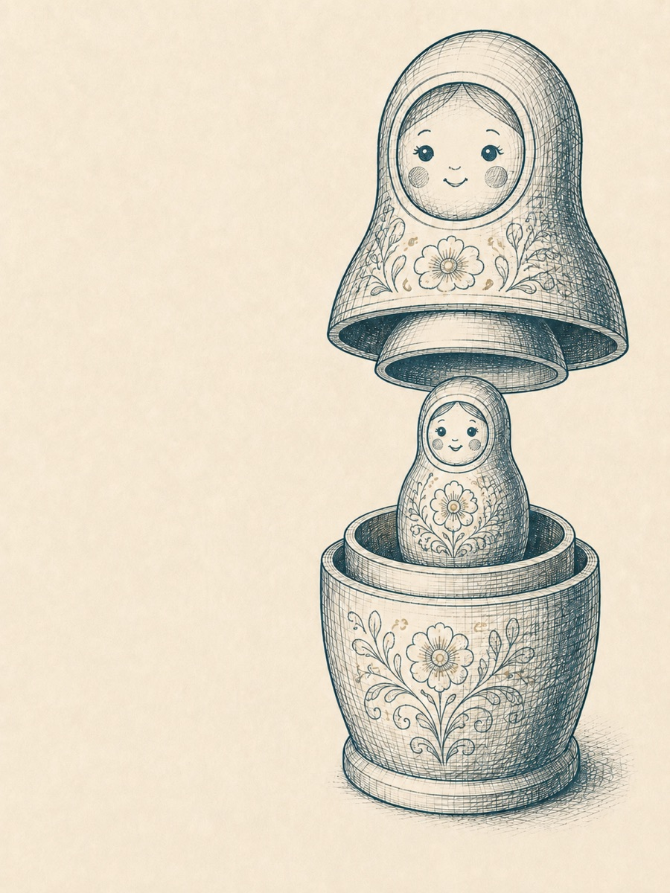

Ну что ж, добро пожаловать, друг мой, в третью главу. Мы продолжаем разбираться в тонкостях структурирования обучающего процесса. Если ты помнишь, мы начали с макроуровня, с самых общих вопросов: кого учим, чему учим, что такое цели и результаты. Дальше выяснили, как именно выстраивать логику обучения и что такое концепт программы и как его конструировать, используя трёхпозиционную модель описания.
Собранный концепт, уложенный в «лестницу навыков» с прописанными TOTE для каждой ступени – это уже мезоуровень (средняя степень детализации). И вот теперь мы готовы спуститься на уровень микроструктуры и ответить на очень важный и тонкий вопрос: окей, мы столько раз говорили о том, что программа обучения должна приводить к появлению навыка у наших студентов.
Отлично, КАК ИМЕННО мы будем это делать? Ну, технически, как будет устроена процедура нашего взаимодействия со студентами, чтобы они по-настоящему, шаг за шагом приобретали и закрепляли навыки, за которыми пришли учиться?
Ух, какой волнительный момент! Я хочу познакомить тебя с моделью, которая изменила мою тренерскую жизнь на «до» и «после», а сегодня я не могу себе представить, что бы я делал, не будь её в моём распоряжении. Она фантастически изящна, многогранна и позволяет добиваться ровно того эффекта, который вынесен в заглавие этой книги: с ней наши программы становятся управляемыми и предсказуемыми.
Итак, знакомься: модель под названием «Матрёшка»1.
Давай для начала вспомним, как выглядит знаменитая русская кукла в разрезе: одна фигурка, внутри неё вторая, внутри — третья… Вспомнил? Отлично, держи в голове эту конструкцию, чтобы в дальнейшем быстрее понять, как она работает на практике. Наша «матрёшка» имеет пять элементов, и я сразу назову их по именам: концепт, инструкция, опыт, шеринг и рефлексия.
Определение
Матрёшка — это микромодель обучения, которая позволяет каждый шаг концепта превратить в единицу навыка.
Ровно эта модель отвечает за то, чтобы «экспертный контент» из твоей головы последовательно превращался в навыки твоих студентов. Она же, матрёшка, нам необходима затем, чтобы открывать и закрывать каждый TOTE на каждой ступени «лестницы навыков».
1 Впервые я узнал об этой модели от Татьяны Мужицкой, она в свою очередь поведала, что получила её из рук бизнес-психолога и тренера Бориса Мастерова, а дальше следы теряются…
02Пять элементов
Устройство и функционал элементов
✦
Сначала коротко про устройство и функционал каждого из элементов «матрёшки»2.
Элемент 1
Концептуальная часть
Это ровно та ступень концепта, тот этап истории, которую мы рассказываем нашим студентам. Здесь может быть тема или одна из тем конкретного урока/вебинара. Здесь находится теоретическое обоснование и смысловое наполнение того, чем мы будем дальше заниматься: о чём мы говорим, для чего нам это, как тема связана с предыдущими и следующими, какой теоретический минимум нам необходимо освоить?
Элемент 2
Инструкция
Переход от теории к практике невозможен без внятной инструкции: что именно мы предлагаем студенту попробовать, в каком формате, в течение какого времени, каким именно способом. Навык давать чёткие инструкции достоин отдельного обстоятельного разговора, и он у нас впереди. Пока же ограничимся тем, что скажем: инструкция должна непосредственно вытекать из концептуальной части и вести к практическому опыту, который непосредственно связан с отработкой того, что обсуждалось в концептуальной части.
Например: если концепт у нас посвящён рецепту приготовления кофе в турке, то инструкция должна соответствовать упражнению, в котором ученик сможет применить на практике полученный рецепт.
Элемент 3
Опыт
Сердцевина модели: ученик выполняет некоторое упражнение, получает практический опыт, соответствующий теме «матрёшки».
И вот здесь наступает важный момент. Есть теория, есть инструкция, есть практика. Чего ж вам боле? Мы можем сказать ученику: «Друг мой, чтобы научиться плавать, надо плавать, поэтому вот тебе инструкция – дальше сам, бассейн за углом». Или: «Хочешь научиться играть на скрипке? Вот смычок, вот так его держать, вот так извлекать звук – понял? Отлично, иди тренируйся». Возможно, ты даже встречал наставников и учителей, которые действовали именно так.
Что не так с подобным подходом? В нём не хватает ещё двух важнейших элементов, без которых цикл обучения не может считаться завершённым. И пока он не завершён, мы понятия не имеем – чему там научился или нет наш подопечный, а значит ни о какой предсказуемости и управляемости образовательного процесса речи быть не может.
2 Подробный разбор этих элементов тебя ждёт в следующих главах. Пока – коротко, в общих чертах.
03Ещё два элемента
Итак, вот они, ещё два важнейших элемента «матрёшки».
Элемент 4
Шеринг
Слово образовано от английского share, «делиться». Смысл шеринга в том, чтобы ученик вербализовал полученный опыт, поделился своими переживаниями и наблюдениями от процесса. Именно на этом шаге мы, как тренеры/наставники можем выяснить, что же происходило в голове ученика во время упражнения: что ему давалось легко, а что сложно, с чем он справился успешно, а где растерялся, как он принимал решения, что из теоретической части запомнил, а что потерял и так далее.
Элемент 5
Рефлексия
И, наконец, финальный элемент «матрёшки» — рефлексия, осмысление. Весь полученный и озвученный опыт важно разложить по полочкам и структурировать: что это было, чему мы здесь научились, применим ли полученный опыт к жизненной практике, где и как мы будем в дальнейшем его использовать, какие ещё выводы для себя можем сделать и т.д.

Схема 4. Матрёшка: пять элементов
04Зачем шеринг
Несколько слов о важности шеринга и рефлексии
✦
Несколько слов о важности шеринга и рефлексии в обучении: зачастую опыт, как таковой — штука непрочная: он может быстро выветриваться из сознания и памяти. Особенно, если этот опыт мы не «обвели», образно говоря, зелёным маркером в своём собственном сознании. Чтоб мне не быть голословным – давай приведу характерный пример:
Характерный пример
Возможно, ты проходил в своей жизни различные тренинги и семинары личностного роста, где тебе давали много разных упражнений (это могли быть игры, телесные практики, актёрские упражнения и т.д.). Ты их делал, с тобой в процессе наверняка что-то происходило, возможно, ты переживал довольно необычные для себя состояния. Но вот практика заканчивалась, а за ней и семинар – и вот ты шёл домой жить свою жизнь. Проходил день, другой, пятый — и уже через неделю ты с большим трудом мог вспомнить, что за опыт на том семинаре ты получил, о чём он был, для чего, а главное – что тебе с ним теперь делать. Всё прошло, как с белых яблонь дым. Знакомая история?
Вот и объяснение – для чего нужны шеринг и рефлексия даже после очень интенсивных и глубоких практик. Для того, чтобы закрепить для ума и памяти: «Вот что я прожил и вот, что я получил. Вот, почему это для меня важно. Вот, что я буду с этим дальше делать»3.
И ещё одно соображение – на этот раз о том, как шеринг и рефлексия влияют на управляемость и предсказуемость обучения: голова взрослого человека так устроена, что выносить суждения и делать выводы относительно любых событий жизни мы умеем очень хорошо. Часто эти суждения выносятся почти автоматически, полубессознательно: «Это ерунда!», «Так не бывает», «Это не работает» и т.д. Обучая взрослых людей, нам очень полезно иметь ввиду, что они (наши ученики) непременно сделают какие-то собственные выводы по поводу любых упражнений на нашем курсе.
Проблема в том, что эти выводы будут какие-то. Мы ничего о них не узнаем до тех пор, пока
а) не спросим;
б) пока не направим этот процесс в нужное нам русло.
Именно поэтому, вопреки мнению некоторых экспертов, шеринг и рефлексия внутри программы нужны, в первую и главную очередь, не группе, а нам самим – чтобы хоть немного понимать, что вообще происходит в головах студентов, и при необходимости влиять на это.
3 Здесь мы должны иметь ввиду, что даже качественные шеринг и рефлексия не гарантируют нам, что ученик через время не вытеснит и не обесценит то, что получил во время тренинга. Защитные механизмы психики устроены интересным образом: порой человек склонен удалять из памяти даже очень значимый для себя, трансформирующий опыт и возвращаться на собственные привычные рельсы. Но без шеринга и рефлексии это произойдёт с гораздо бОльшей вероятностью.
05Пример: шнурки
Матрёшка в действии: учим завязывать шнурки
✦
Впереди у нас ещё несколько глав, в течение которых мы будем очень внимательно и подробно разбирать составные части «матрёшки», а пока, я чувствую, будет полезно переключиться и рассмотреть на очень простом примере, как эта модель показывает себя в действии. Итак, вот мы учим человека завязывать шнурки, используя «матрёшку»:
Концепт
Дорогой мой друг, уметь завязывать шнурки самостоятельно — полезно и важно, потому что благодаря этому навыку мы становимся более независимыми: мы получаем возможность самостоятельно распоряжаться своим гардеробом, самостоятельно выбирать, в чём и когда выходить из дома и, в конце концов, чувствуем себя уверенно и самодостаточно, потому что можем сами о себе позаботиться и завязать шнурки без посторонней помощи. Ниже тебя ждёт простая и универсальная инструкция, которая работает абсолютно с любой парой обуви на шнурках.
Инструкция
Итак, возьми ботинок или кроссовок, левый или правый – значения не имеет. Проверь, чтобы оба свободных конца шнурка были одинаковой длины. Надень обувь на ногу, далее следуй изображениям на иллюстрациях (или посмотри видео, ссылка вот). В конце у тебя должен получиться вот такой красивый бантик. Проделай всё это прямо сейчас.
Опыт
Студент по заданной инструкции совершает все перечисленные действия — в финале у него успешно получается узелок.
Шеринг
Мы задаём ученику, например, такие вопросы: «Ну расскажи, как у тебя проходил этот процесс? Было ли это сложно?» «Насколько понятной для тебя была инструкция?» «На каком шаге тебе было сложнее всего?» «А на каком проще?» «Были ли неприятные эмоции, когда не получалось?» «Как ты действовал в этот момент?»
И мы можем получить, например, такой ответ: «Слушай, вначале я прямо напрягся, даже страшно стало — а вдруг не справлюсь? Но потом решил идти по инструкции, просто повторил всё, что ты рассказал — и получилось. И мне сейчас очень радостно, что получилось с первого раза».
Рефлексия
И получив такие ответы, мы можем перейти к рефлексии и задать следующий вопрос: «А скажи, полезен ли тебе этот навык? Сможешь ли ты им пользоваться теперь самостоятельно? Насколько более уверенно и независимо ты себя теперь ощущаешь?» И, допустим, ученик отвечает: «Ну конечно, ещё бы. Раньше жена помогала мне шнурки завязывать, а теперь я чувствую я могу сам и это действительно добавляет мне уверенности». Точка.
06Матрёшка закрылась
Вот мы разложили по «матрёшке» освоение простого навыка. И если мы корректно её сконструировали, то в момент рефлексии человек действительно говорит: «Да, мне это пригодится, я буду этим пользоваться, мне это помогает чувствовать себя более уверенным» — и это означает для нас, что «матрёшка» «закрылась»: этот навык сформировался на базовом уровне. Что значит «закрылась»? Это значит, что концепт, который мы заложили, совпал с выводами студента: то, чего мы хотели достичь на этапе проектирования программы совпало с тем, что получилось по её итогу.
Это очень важный момент. Про корректное «открытие» и «закрытие» «матрёшек» мы тоже обязательно поговорим более подробно в следующих главах, а пока – небольшой комментарий для особо дотошных и требовательных.
Нужно ли закреплять навык, который вот только-только родился у нас на глазах в рамках одной матрёшки и одной итерации опыта? Конечно, нужно. Можем ли мы сейчас сказать, что на данном этапе он ещё очень непрочный и неустойчивый? Безусловно, всё так и есть.
Чтобы сформировать прочное умение, при котором наш ученик с завязанными глазами, сонный, пьяный, при температуре 38 сможет на автомате завязать себе шнурки — понадобится какое-то количество повторений и практики в его собственной жизни: не только кроссовки, но и кеды, не только кеды, но и ботинки, и разные шнурки, и разные обстоятельства. Но базово мы можем быть спокойны: если мы так организовали обучающий процесс, что человек получил успешный опыт и зафиксировал его для себя, то в дальнейшем он скорее всего сможет укреплять его уже самостоятельно, без нашей помощи4.
4 Ещё раз сделаю эту оговорку: мы не всесильные боги и не супергерои, мы не даём гарантий и не влияем на независимую волю другого взрослого человека. В конечном итоге – это его свободный выбор, применять то, чему он уже научился или нет. Почему человек может отказываться от применения уже полученного на курсе навыка – отличный и очень глубокий вопрос. Но сейчас разговор не об этом. Разговор о том, как мы можем создать максимум зависящих от нас условий, чтобы человеку было легко пользоваться за пределами нашего курса тем, чему мы его научили.
07Матрёшка и ТОТЕ
Как «матрёшка» стыкуется с «лестницей навыков»
✦
А теперь хитрый момент. У меня есть предположение, что ты уже начинаешь сопоставлять в голове нынешний разговор с предыдущими темами и, наверное, у тебя возникает вопрос: секундочку, а как «матрёшка» стыкуется с «лестницей навыков»? Мы же помним: внутри каждой ступени «лестницы» у нас ТОТЕ. И вот ум начинает заходить за разум: а как связаны «матрёшка» и ТОТЕ? Они помогают друг другу, мешают, дополняют? Давай разберёмся.
Напомню, ТОТЕ (T — test 1, O — operation, T — test 2, E — exit) — это модель, которая описывает внутреннюю механику обучения в нашем мозгу. Когда я учусь чему-то новому, мне нужно сначала осознать, в какой точке я нахожусь, потом совершить действие, потом сравнить то, что получилось, с тем, что было в начале, подвести итоги — и перейти или не перейти на следующий цикл. ТОТЕ описывает петлю обратной связи в моём сознании. Но! TOTE не отвечает инструментально и технологически на вопрос: как именно нам, авторам и методологам, организовать процесс встраивания навыка? Какие конкретные шаги совершить, чтобы ТОТЕ в голове у нашего студента «закрылся», и мы могли перевести его на следующую ступень лестницы?
Ещё раз: мы концептуально понимаем, что в рамках каждой ступени «лестницы» ТОТЕ должен как-то открыться и закрыться. Но нам нужен некоторый инструмент, который ответит на вопросы:
как мы подведём студента к практике?
Какая практика здесь нужна?
Что будет после неё?
Как мы поймём, что TOTE закрыт и можно двигаться дальше?
Вот ровно на все эти вопросы нам отвечает «матрёшка».
Зафиксируем
ТОТЕ — описание мыслительных процессов в голове у человека. Абстрактная модель внутренних операций, которые разворачиваются в мозгу учащегося.
«Матрёшка» — это дидактический дизайн: прикладное решение, которое помогает организовать этапы взаимодействия со студентом: в рамках урока, тренинговой сессии, воркшопа, мастер-класса. Когда напротив меня сидит студент, именно «матрёшка» отвечает на вопрос, как именно я буду обеспечивать для него прохождение по циклу TOTE на конкретной данной ступени5.
Ну, как? Вскипели мозги в очередной раз? Понимаю, держись. Я предположу, что у тебя уже возникло немало новых вопросов: почему всё-таки модель называется именно «матрёшкой»? Как соотносится концепт с рефлексией, а инструкция — с шерингом? Как подбирать упражнения, какими они бывают, где их брать? Как собрать «матрёшку» в рамках своего проекта?
Это важные вопросы, и будь уверен – я не брошу тебя без ответов. Следующие главы будут посвящены именно последовательному разбору того, как «матрёшка» организована внутри себя и как ей пользоваться с наибольшим успехом. А пока – небольшая практика, чтобы «приладить к руке» этот новый для тебя инструмент…
5 Эти модели относятся к несколько разным уровням описания процесса обучения: сначала мы можем думать ТОТЕ-ами, чтобы выстроилась ясная «лестница навыка». А когда приходит необходимость «навести резкость» и озадачиться вопросом «как именно в рамках этого урока у человека получится то, что должно получиться» — вот здесь мы и будем вооружаться «матрёшкой».
08Практика
Рабочая тетрадь
Пофантазируй о своей первой матрёшке
1. Открой рабочую тетрадь и нарисуй матрёшку в разрезе: пять вложенных элементов — концепт, инструкция, опыт, шеринг, рефлексия.
2. Посмотри на свою лестницу навыков и в режиме брейнсторма поразмышляй: какой ТОТЕ внутри твоей лестницы ты мог бы разложить на элементы матрёшки?
3. Запиши первые идеи, которые начнут появляться — пока без требований к качеству, просто наброски.
Вопросы вместе с твоими ответами скопируются в буфер — вставь их в свой документ.
Отпусти ум в лёгкое творческое парение и просто понаблюдай, как это начнёт укладываться в голове. Если пока не укладывается — ничего страшного: сейчас уложим, последовательно и спокойно, и всё у нас обязательно будет хорошо.